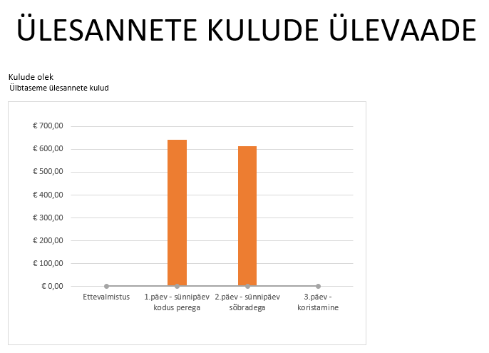

Miks on diagrammid olulised?
Microsoft Projecti diagrammid ja aruanded (Reports) aitavad visualiseerida keerulisi andmeid. Need on vajalikud, et esitada projekti käiku meeskonnale või kliendile, näidates selgelt ressursse, kulusid ja tähtaegu.
1. Gantti diagramm (Gantt Chart)
Mis see on: See on kõige tavalisem vaade projektijuhtimises, mis näitab ülesandeid ajajoonel.
Kuidas avada: Vali ülemisest menüüst vahekaart View ja sealt Gantt Chart.
Milleks kasulik: Gantti diagramm aitab näha ülesannete järjekorda ja nendevahelisi seoseid. See on parim tööriist ajakava jälgimiseks.

2. Projekti ülevaade (Project Overview Dashboard)
Mis see on: See on visuaalne töölaud (dashboard), mis koondab olulise info projekti progressi kohta ühele lehele.
Kuidas avada: Vali menüüst Report -> Dashboards -> Project Overview.
Milleks kasulik: See annab üldise pildi projekti seisust. Siin on näha valmimise protsent, eelseisvad verstapostid (milestones) ja hilinevad ülesanded.

3. Ressursside aruanne (Resource Overview)
Mis see on: See aruanne visualiseerib projektis osalevate inimeste ja vahendite koormust.
Kuidas avada: Vali menüüst Report -> Resources -> Resource Overview.
Milleks kasulik: See aitab näha, kes on meeskonnas ülekoormatud ja kes on vaba. See on kriitiline tööriist ressursside õigeks planeerimiseks.

4. Kulude aruanne (Cost Report)
Mis see on: Graafiline aruanne, mis näitab projekti eelarve kasutamist ja rahavoogusid.
Kuidas avada: Vali menüüst Report -> Costs -> Cost Overview.
Milleks kasulik: See aitab projektijuhil püsida eelarves. Graafikud näitavad selgelt, kui palju on raha kulunud ja kui palju on veel jäänud projekti lõpuni.

Marek Lukk soovitab
Kasuta aruandeid regulaarselt. Gantti diagramm on hea igapäevaseks tööks, kuid Dashboards ja Reports on parimad vahendid juhtkonnale esitlemiseks, et näidata projekti terviklikku edu.
Tagasi üles